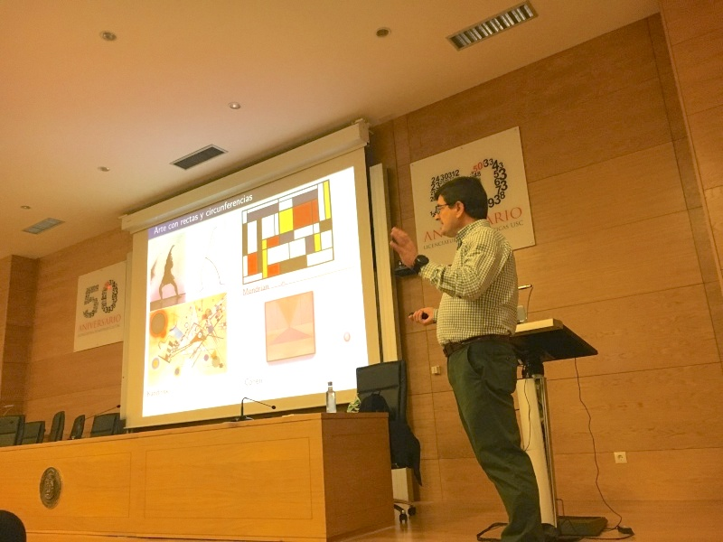
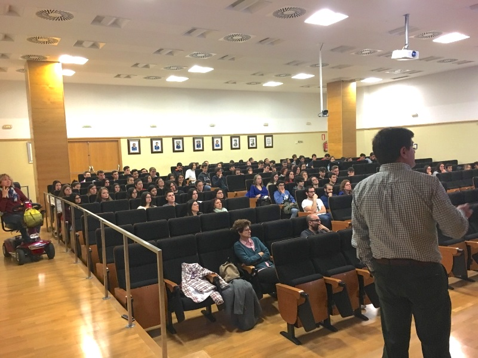

Elena Vázquez Cendón
Universidade de Santiago de Compostela
El director del Instituto Universitario de Matemáticas y Aplicaciones de la Facultad de Ciencias de la Universidad de Zaragoza, Luis Rández García, visitó los días 18 y 19 de octubre de 2018 la Universidad de Santiago de Compostela para hablar de la relación entre matemática y arte.
Enmarcado en el ciclo de conferencias divulgativas MaTeDeSoH del ICIAM2019, las conferencias fueron organizadas por la SEMA junto con la Facultade de Matemáticas de la USC y la Asociación Galega de Profesorado de Educación Matemática, AGAPEMA.
A las conferencias, impartidas en el Aula Magna de la Facultad compostelana, asistieron estudiantes y docentes de los IES Fernando Blanco de Cee (A Coruña), IES Eduardo Pondal de Ponteceso (A Coruña), IES As Barxas de Moaña (Pontevedra), el Seminario menor de Santiago y su IES Ramón Caamaño de Muxía (A Coruña), todos ellos convidados desde AGAPEMA.
El profesor Rández comenzó su charla mostrando cómo se vienen utilizando ciertas curvas a lo largo de la historia, tanto en la construcción como en la decoración de monumentos románicos y góticos. Hizo así una breve descripción de los conceptos matemáticos básicos necesarios e ilustró con fotografías y planos su uso en diversas obras de referencia en arquitectura e ingeniería.
En la segunda parte da conferencia se presentó el cortametraje de animación en 3D Ars Qubica, sobre la presencia de la geometría y las matemáticas en el arte, empleando la figura de un cubo como hilo conductor, que al ser cortado por un plano puede dar lugar a un cuadrado, un triángulo equilátero, un pentágono no regular o un hexágono. La intención es comprobar cómo estas secciones aparecen en distintas obras artísticas y ornamentales.
 
Figura 1
Dos momentos de la conferencia impartida por el profesor Luis Rández García. Fotos
de Elena Vázquez Cendón.